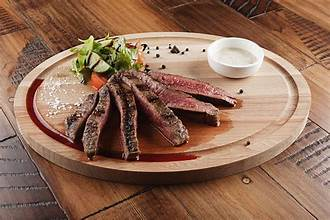

language for creating web pages and web applications.
안창살은 쇠고기 부위 중 하나로, 소의 횡격막 부위로서 생물학/수의학적으로는 내장이 아니지만 정육업계에서는 고기가 아닌 내장, 특수부위로 분류한다. 돼지고기로는 갈매기살에 해당하는 부위이며, 갈비 바깥 부분이 아닌 안쪽 부분 적내장과 백내장을 구분하는 부위에 있다. 소 1마리 당 500~700g 정도 밖에 안 되는 희귀 부위로, 두 부분으로 나뉘어서 나온다. 극히 적은 양만 나오는 부위인 만큼 가격대는 최고급 수준이며, 살치, 토시, 제비추리보다 평균적으로 비싸다.